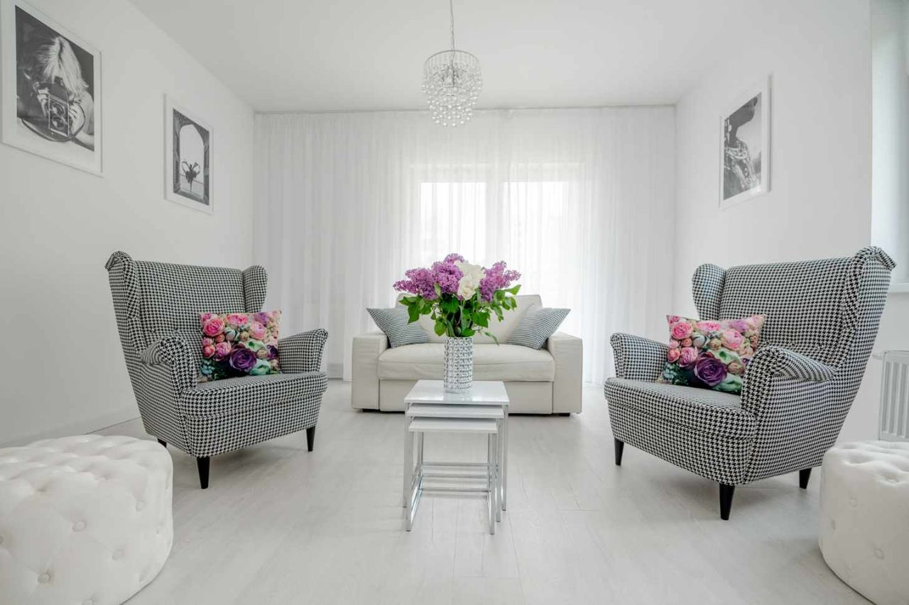
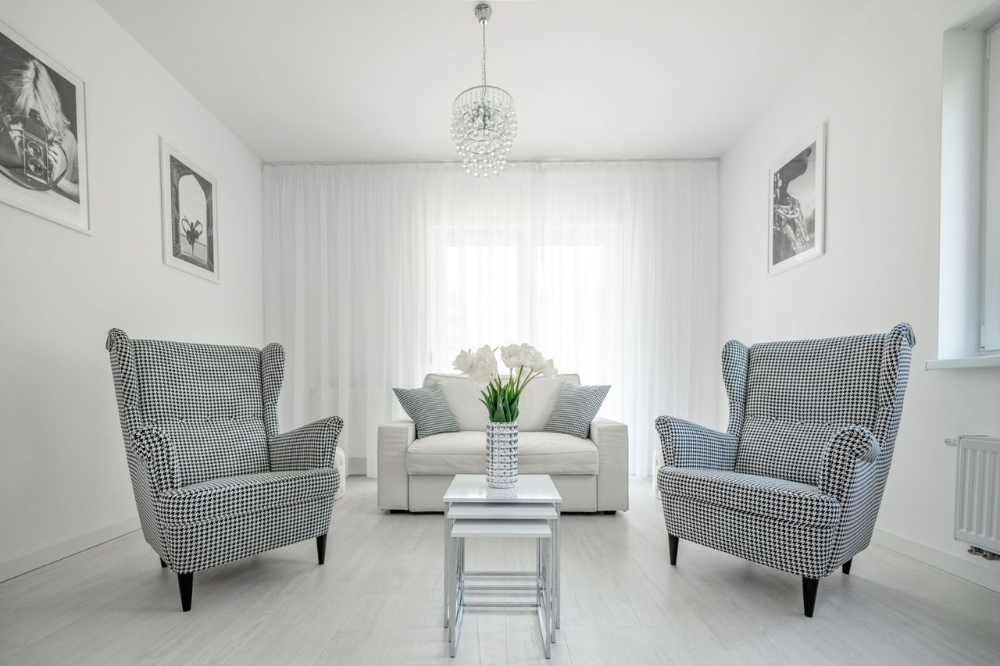

ZACZYNAMY OD KONTAKTU
Możesz zapisać się poprzez widget na stronie lub bezpośrednio przez platformę Znany Lekarz.
Psycholog w Poznaniu
Wspieram w lepszym rozumieniu własnych emocji, potrzeb oraz schematów działania, aby z większą świadomością odnajdywać się w codziennych wyzwaniach i budować życie w większej zgodzie ze sobą.

O mnie

Pracuję wyłącznie z osobami dorosłymi. Wspieram w kryzysach psychicznych, trudnościach emocjonalnych, relacyjnych i adaptacyjnych, a także w budowaniu samoakceptacji, motywacji i większej samoświadomości.
Szczególnie bliska jest mi psychoedukacja dotycząca uzależnień oraz wspieranie pacjentów w tym obszarze.
W swojej pracy szczególną uwagę przywiązuję do budowania relacji opartej na szacunku, empatii i poczuciu bezpieczeństwa. Wspieram pacjentów w bardziej skutecznym rozumieniu mechanizmów leżących u podłoża doświadczanych trudności oraz w rozwijaniu adaptacyjnych sposobów radzenia sobie z nimi.
Zależy mi, aby każda osoba opuszczająca gabinet czuła się wysłuchana i zrozumiana, a także zyskiwała większą świadomość własnych emocji oraz potrzeb.
Tytuł magistra psychologii ze specjalnością kliniczną dzieci i dorosłych uzyskałam na Uniwersytecie SWPS w Poznaniu. Swoje kompetencje zawodowe rozwijałam m.in. w Centrum Terapii Skoncentrowanej na Rozwiązaniach CTSR, Studium Psychoterapii Dzieci i Młodzieży, Instytucie Pozytywnej Seksualności oraz Fundacji Prodeste. Swoją pracę poddaję regularnej superwizji.
Doświadczenie zawodowe zdobywałam stażując w Centrum Medycznym HCP w Poznaniu. Obecnie pracuję w Centrum Zdrowia Psychicznego Instytutu Psychoedukacji w Swarzędzu, gdzie również wspieram osoby dorosłe.
Prowadzę profil psychoedukacyjny na platformie Instagram - @ninamizgalska.psycholog, gdzie mogą mnie Państwo lepiej poznać!
JAK PRACUJEMY
Nasze spotkania to współpraca i relacja. Zależy mi, abyś od początku czuł/a się zrozumiany/a i miał/a przestrzeń, w której możesz być sobą.
Możesz zapisać się poprzez widget na stronie lub bezpośrednio przez platformę Znany Lekarz.
To czas, by się poznać i sprawdzić, czy to miejsce dla Ciebie. Słucham uważnie i pytam o to, co ważne.
Bez ocen, bez presji.
Określamy cele i możliwe drogi pracy. Dobieramy metody dopasowane do Ciebie — elastycznie i z uważnością.
Twoje tempo ma znaczenie.
Towarzyszę Ci w procesie również poza naszymi spotkaniami. Wspieram Cię w codzienności i pomagam wprowadzać zmiany, krok po kroku.
Usługi
Wsparcie w kryzysach psychicznych, trudnościach emocjonalnych, relacyjnych i adaptacyjnych, a także w budowaniu samoakceptacji, motywacji i większej samoświadomości, a także psychoedukacja w obszarze uzależnień.
Umów wizytęJednorazowe lub krótkoterminowe spotkania, podczas których wspólnie szukamy rozwiązań konkretnego problemu lub planujemy dalsze kroki współpracy.
Umów wizytęRezerwacja
Możesz samodzielnie wybrać dogodny termin bez konieczności dzwonienia.
Gabinet
Spokojna przestrzeń, w której możesz poczuć się bezpiecznie.


Dmowskiego 111a/2
60-204 Poznań
Pytania
To zupełnie normalne. Wiele osób przychodzi z poczuciem, że „coś jest nie tak”, "coś nie gra" lub "coś się zmieniło", ale trudno im to ubrać w słowa. Nie musisz mieć gotowej historii ani konkretnego tematu. Na pierwszych spotkaniach wspólnie przyglądamy się temu, co się dzieje, stopniowo nazywając to, co dla Ciebie ważne.
Częstotliwość spotkań ustalamy indywidualnie, w zależności od Twoich potrzeb i możliwości. Najczęściej spotkania odbywają się raz w tygodniu - taka regularność umożliwia utrzymanie ciągłości pracy i bycie w kontakcie z tym, co się dzieje na bieżąco.
Pierwsza konsultacja kosztuje 200.00 PLN, każde kolejne spotkanie 190.00 PLN. Płatność odbywa się przelewem lub gotówką, a szczegóły ustalamy przy pierwszym spotkaniu.
Tak. Tajemnica zawodowa może zostać uchylona wtedy, gdy istnieje realne zagrożenie życia lub zdrowia Pacjenta albo innych osób. W przypadku wystąpienia takich okoliczności każdorazowo dążę do omówienia sytuacji z Pacjentem oraz podejmowania działań w sposób możliwie transparentny, z poszanowaniem jego godności i bezpieczeństwa.
Pracuję z osobami dorosłymi, oferując wsparcie psychologiczne w kryzysach, trudnościach emocjonalnych, relacyjnych i adaptacyjnych. Towarzyszę także w procesie budowania samoakceptacji, wzmacniania motywacji i rozwijania większej samoświadomości. Ważnym elementem mojej pracy jest również psychoedukacja, m.in. w obszarze uzależnień.
Kontakt
Jeśli czujesz, że potrzebujesz wsparcia, możesz zrobić pierwszy krok w swoim tempie.
Adres gabinetu Dmowskiego 111a/2 Poznań Umów wizytę